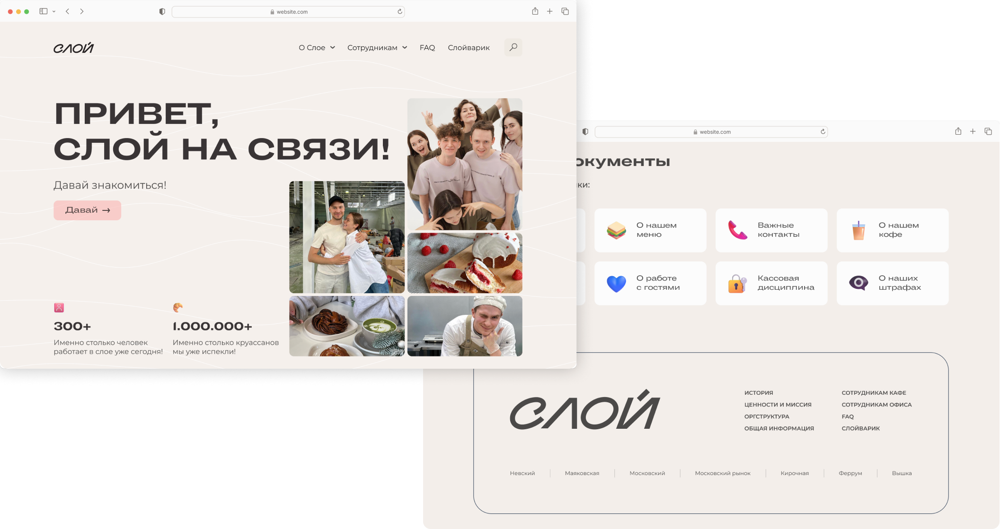

Корпоративный портал бренда «СЛОЙ»
UX-исследование
информационная архитектура
копирайтинг
совместно с UI-дизайнером
Корпоративный портал бренда «СЛОЙ» — самый большой проект на текущий момент, над которым я работала. Я выполняла роль UX-исследователя и составителя структуры, текстов: продумывала логику портала, сценарии взаимодействия, также совместно со старшими UI-дизайнерами обсуждали графику и оформление портала. Проект объединял все направления компании всероссийского масштаба — производство, опт и розницу, поэтому работу над ним считаю для себя особенно значимой.
